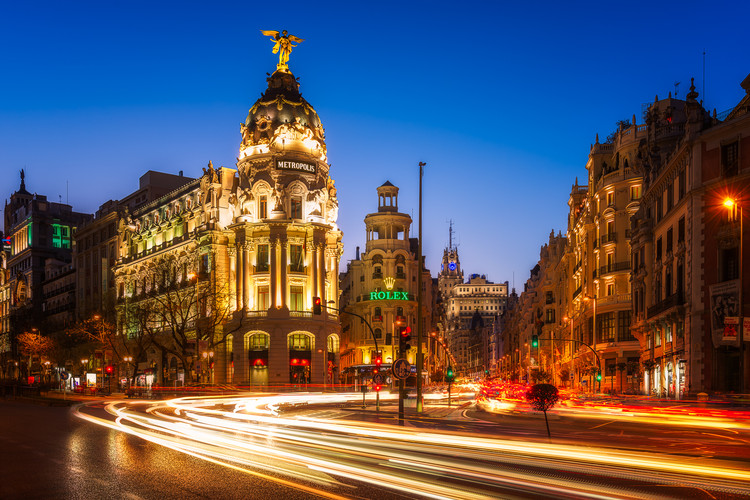
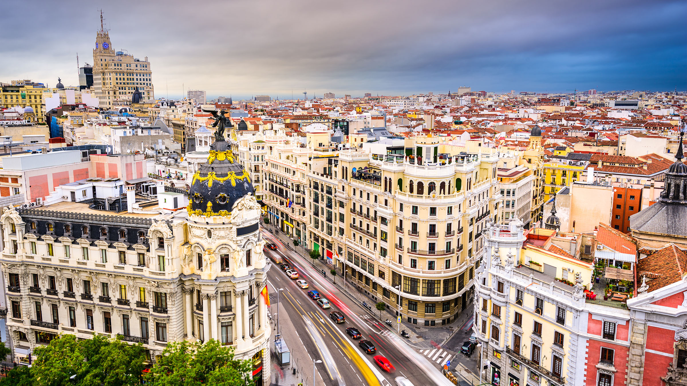

La ciudad de Madrid en los últimos años se está convirtiendo en un destino turístico muy atractivo para los turistas tanto españoles como internacionales. Más allá de los monumentos que se pueden visitar en Madrid, el encanto que se vive en sus principales plazas y calles, con lugares emblemáticos como la plaza Mayor o la renacida Gran Vía, es uno de sus principales atractivos. Pero sobre todo quienes visitan Madrid aprecian el espíritu muy acogedor de la ciudad, siempre con un gran ambiente tanto cultural, como de ocio y gastronómico

Madrid

Madrid
Y también valoran la riqueza artística que encierran sus museos, con un especial protagonismo de los que forman el conocido como Triángulo del Arte, con el Prado, Thyssen-Bornemisza y Reina Sofía.
Qué ver y hacer en tu visita de Madrid
De cara a tu viaje de turismo a Madrid, aquí tienes una lista de consejos, visitas recomendadas y temas interesantes que seguro te serán útiles. En esta lista encontrarás toda la información sobre los más importantes rincones y monumentos de la capital, así como consejos e información práctica para visitarlos. A este respecto, de entrada te aconsejamos leer este artículo con una ruta para visitar lo mejor de Madrid en dos o tres días.
Madrid
Por otro lado, en un viaje de turismo a Madrid debes reservar tiempo para hacer una excursión a algunos de los sitios más interesantes que hay cerca de la capital. Ese es el caso de las históricas ciudades de Toledo o Segovia, o del monasterio de El Escorial, Aranjuez o Alcalá de Henares. En este artículo tienes amplia información con los mejores sitios que ver y visitar cerca de Madrid. Y si ir de compras es una de tus grandes motivaciones para visitar la capital, te será útil saber cuándo abren las tiendas y centros comerciales en domingos y festivos en Madrid. Esperamos que te sean de utilidad.
Información general de turismo en Madrid
- – Ruta con 5 visitas recomendadas para un día de turismo en Madrid
- – Itinerarios guiados por parques, jardines y zonas verdes de Madrid
- – El “Sitio del Retiro y el Prado” en la lista previa del Patrimonio Mundial de la Unesco
- – Guía “Madrid, un estilo de vida”
- – Programa de visitas Bienvenidos a palacio
- – Guías de Cultura, Gastronomía, Compras y la Noche de Turismo Madrid
- – Guía de Iglesias Singulares en Madrid y los alrededores
- – Guía de Turismo Accesible en Madrid
- – Guía de Mercadillos de la Comunidad de Madrid
- – Guía de Comercios Centenarios de Madrid
- – Dónde están las Oficinas de Turismo en Madrid
- – Ventajas de la tarjeta turística Madrid Card
Qué ver en el Madrid
- - Plaza Mayor y alrededores
- - Plaza Mayor y alrededores
- - Puerta del Sol y alrededores
- - Iglesia de San Ginés
- - Plaza de la Villa en Madrid
- - Plaza de Isabel II en Madrid
- - Plaza de Oriente
- - Palacio Real de Madrid
- - Catedral de la Almudena en Madrid
- - Capilla del Obispo en la plaza de la Paja
- - Paseo del Prado
- - Gran Vía y alrededores, etc